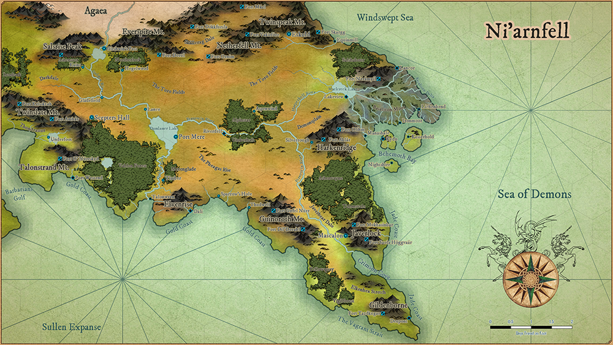

Ni'arnfell
The Barbarian Kingdom
 Niarnfell.png
{kind=link}
The sky is painted in gold and crimson as the sun rises over the hilly horizon of the open plains. Rolling hills of grass and interspersed woods stretch out as far as the eye can see. Stone monoliths rising from beneath the ground stretching up toward the heavens. It is a land of open spaces, vast riches, and the humble folk that call it home.
Culture
The Narr culture is that of history, honour and virtue. The have a verdant ethos, almost tribal in nature, yet are do not shun from progress and the unknowns of new ideas. They live in tune with nature and have a strong tradition in fieldcraft, herbalism and hunting.
The people tend to be accepting of outsiders, and evolve their own beliefs based on their encounter, but remain true to their basic morals and virtues throughout. Very much influenced by the Dwarven Imperium which conquered the lands in the Age of Stone they are hardy and hard working, often regarded as stoic and unmoving, but with a friendly, accepting demeanor.
Geographical Regions
The Toro Fields
In the North, a great range on mountains divide the Ni'arnfell from its neighboring realm. Collectively known as the Long Mountains, it forms the upper edge of the grasslands known as the Toro Fields, also the Feather Plains. The lower edge reaching the banks of the Golden River. The region stretches over almost half of the realm.
| Settlements | Size | Political Align. |
|---|---|---|
| Eskold | Metropolis | Narr Confederate Capitol |
| Aspenwind | Town | |
| Equinmill | Town | |
| Fort Dorul | Dwarf Fort | |
| Fort Ornim | Dwarf Fort | |
| Fort Skragg | Dwarf Fort |
Notable Locations
Netherfell Mountains
The Netherfell Mountains flank the Toro Fields in the north, and together with the Twinspeak form an almost impassible border between the blissful plains and the unstable Skällcrag Dale to the north, where many Tainted kin reside. It is believed that somewhere in the heart of the mountain, an ancient dragon lies dormant.
Twinspeak Mountains
Rising above the walls of Eskold are the Two Fingers of Ornim, dual peaks facing off into the clouds. So called as those who attempt to climb to the top most often come face to face with the god of the grave. The range is shrouded in superstitions, the one more fanciful than the next, which prevents many of the barbaric tribes who dwell in the lands beyond it to cross.
Alpinstar Forest
To the Southern edge of the Toro fields lies the Alpinstar The centre of the forest has not been found to this day. The trees are variant and foreign to any others of the Ni'arnfell, believed to have been brought from afar thousands of years ago. No one ventures too deep into the grove, and even the Druids of the lands advise not to dwell in it's embrace for too long.
The Pheagas Rise
The South of the Ni'arnfell is characterized by the unending waves of hills and gullies. Also known as the Leopard Hills the area is most common for it's plethora of wildlife. Keeping East of the Golden River and reaching the Ferrovein at the far end, it is an area that developed primarily through ship trading. Merchants frequent the settlements on both rivers, as it travels even to the Realm of Agaea, Menassim and Casavano.
| Settlements | Size | Political Align. |
|---|---|---|
| Port Mere | Metropolis | Narr Confederate Capitol |
| Riverdell | City | Narr Confederate affiliate |
| Talonwren | Village | Independent City State |
| Timber | Town | Narr Confederate affiliate |
| Dali | City | Independent City State |
| Sparrow's Hole | Village | Narr Confederate affiliate |
| Thudwell | Village | Narr Confederate affiliate |
Notable Locations
Damlamer Lake
The Great Mere lies on the Western edge of The Pheagas Rise. So big that its banks shift with the phases of the moons. On its eastern bank is the Jewel of the South, the metropolis city of Port Mere. The lake itself has many secrets. One particular legend claims that deep beneath the waters, in the deepest parts of the lake, lies an ancient, submerged ruin.
Elvenrise
On the Southern edge of the continent stands the Elvenrise as a monument and beacon to all who seek the mouth of the Golden River. It's peaks rise above the clouds, covered with an annual fall of snow. So named for the Elves that dwell at its base, the monolith itself is the subject of many rumours, including that the caverns beneath its roots contain portals to the hidden places of the world.
Darkdale
The Wester regions of the Ni'arnfell are know as Darkdale, sometimes referred to as The Golden Glade. Beyond it lies the Unending Forests ofMenassim. Its Southern border is marked by the Twinslate Mountain range, and ends at the coast, beyond the Vahlen Forest. It is a mysterious region and not well travelled, known for the presence of mischievous Fey and large lizard-like creatures that hunt the plains.
| Settlements | Size | Political Align. |
|---|---|---|
| Scepters Hall | Large City | |
| Gladefield | Village | |
| Lance | Village |
Notable Locations
Vahlen Forest
The Great Forest is a wild and mysterious place. Those who venture too deep never return to the civilized lands, and those who manage to escape it's dark embrace are most often driven mad by the spirits that dwell within. It is said that at it's centre is a great lake that was created by a falling god.
Everspire
The Everspire region is so named for the presence of the Everspire Mountain range, but includes the only slightly smaller Salsrise range, and the lands at its feet. Most notably, the area is known for it's primary settlement, Girshwin's Pass and the Great Lock system to able to lift even trade galleys up the plateau to Agaea.
| Settlements | Size | Political Align. |
|---|---|---|
| Girshwin's Pass | Large City | |
| Ashenstor | Fortress City | |
| Hegelwood | Village | |
| Kains | Village |
Skällcrag Dale
To the North lies Skällcrag Dale, home of the Tainted. An untamed, dangerous place. Barren and harsh, its hills easily hide the creatures that lurk. But for those (mostly Dwarves) who can face the constant threat and unforgiving lands, there lies riches at the toots of the mountains.
| Settlements | Size | Political Align. |
|---|---|---|
| Fort Mäel | Dwarf Fort | |
| Fort Dökkfursla | Dwarf Fort | |
| Fort Vakirföre | Dwarf Fort |
Javerhear Dale
The Javerhear Dale, also known as the Red Bear Peninsula, lies to the South-East. Flanked by mountains on the West and a massive Forest on the East, the civilized dale forms a narrow strip of land along the length of the Peninsula.
| Settlements | Size | Political Align. |
|---|---|---|
| Mascalon | Metropolis | |
| Fort Mukhasinbar | Dwarf Fort | |
| Fort Höggvaär | Dwarf Fort | |
| Fort Gufel Nürr | Dwarf Fort | |
| Fort Dil'Dorahl | Dwarf Fort |
Notable Locations
Mount Guinoroth
Surrounded by empty an stretch the Sentinel Spire of Guinoroth stands quiet against the skies. Desolate and far removed from civilization, not much is known about the range. The Dwarves who dwell under its spires are known to be very secretive, bordering on aggressive when questioned about what lies beneath the stones. The gates of their forts are locked to all outsiders, even other Dwarves.
Javerlock
The Peak of Javerlock, a dormant volcano, holds the majority of the region's civilized society. Gold, Silver and even Mithril lies beneath the stone and the mines run deep into the earth. Tunnels connect the city of Mascalon, the primary hub for trade, with the Dwarven forts within the peaks.
Ashenvayne & Talonvale
Deep within the forests of the Dale dwells demons. Forgotten to the ages, an ancient ruin of the eons before lies within. The ancients ruled the Dale from two districts, which now gives the forests their names.
Elkenhex Stretch
At the tip of the world and outstretched finger points into the ocean named as the Sullen Expanse. Surrounded by jagged and untamed waters, exposed to the turbulence of the deep oceans, the Vagrant Straight and Jade Coast see little peace. The city of Deupont stands there at the foot of the Gildenborne Mountain as a lighthouse against the rough seas. A halfway house to the passing traders who wish to claim the riches of the Golden Trade Route.
| Settlements | Size | Political Align. |
|---|---|---|
| Deupont | Large City | |
| Fort Yazdkugar | Dwarf Fort |
Basaltton Moor
Reaching out into the Sea of Demons lies the Basaltton Moors, a great expanse where the Basaltton Delta scatters into the sea. It is an untamed place, for leagues and leagues of land is covered in swamps and bogs, along with the creatures that are drawn to such places. Settlements are found along the edges of the Moor, and only the brave boatmen of Lakeview care to navigate the maze of rivers and streams between the Maelcreek Lake an the coast.
| Settlements | Size | Political Align. |
|---|---|---|
| Lakeview | Large City | |
| Fort Nerämyil | Dwarf Fort | |
| Lancor | Large City | |
| Lichenbend | Village | |
| Ironmoor | Town |
Behemoth Bay
Behemoth Bay runs along the coast of the lands known as the Demonsplain. It is an unforgiving place, with the bay itself home to many pirates who wish to plunder the traders sailing around the peninsula. The bay itself holds three islands, each claimed by an independent settlement who compete for rule.
| Settlements | Size | Political Align. |
|---|---|---|
| Kydo | Large City | |
| Kesserhold | Town | |
| Manashale | Large Town | |
| Nightshire | Town |
Harkenridge on the Demonsplain
South of the Harperbell River and West of the Ferrovein, lies the mountain named Harkenridge. An unforgiving and desolate place where the savannah turns barren and demons often escape into the mortal realm.
| Settlements | Size | Political Align. |
|---|---|---|
| Fort Olihm | Dwarf Fort | |
| Fort Ablár | Dwarf Fort | |
| Silverrough | Village |
Thunrastur
Isolated, looking out over the Great Barbarians Gulf and guarded by the Twinslate Mountains, is a humble region known as Thunrastur. A place of little interest to the outside world, its inhabitants enjoy the peace and quiet of the tranquil and pristine land.
| Settlements | Size | Political Align. |
|---|---|---|
| Fort Keisskzah | Dwarf Fort | |
| Fort Amhär | Dwarf Fort | |
| Fort Nürrskyd | Dwarf Fort | |
| Underfoot | Town |